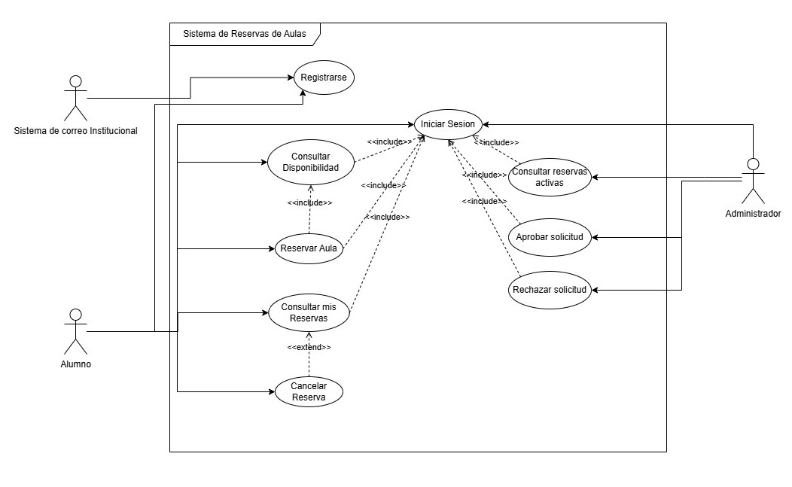
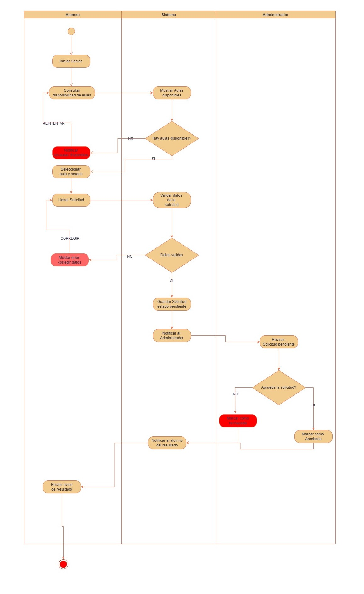

Diagramas del sistema
A continuación se presentan los tres diagramas que documentan el análisis y diseño del sistema:
Diagrama de Casos de Uso
Muestra las interacciones entre los actores principales del sistema (Alumno, Administrador y el Sistema de Correo Institucional como actor secundario) y las acciones que cada uno puede realizar. Incluye relaciones «include» y «extend» para representar dependencias entre casos de uso.

Diagrama de Actividades
Representa el flujo completo del proceso de reserva utilizando carriles (swimlanes) para diferenciar las responsabilidades del Alumno, el Sistema y el Administrador. Incluye puntos de decisión, manejo de errores con reintento y el flujo opcional de cancelación de reserva.

Diagrama Entidad-Relación
Modela las cuatro entidades principales del sistema (Alumno, Aula, Reserva y Administrador) usando notación Crow's Foot. Define los atributos, claves primarias, claves foráneas y las cardinalidades que relacionan cada entidad para representar correctamente la estructura de la base de datos.